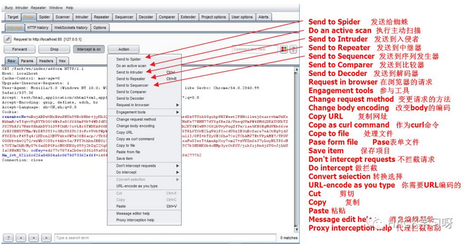

BurpSuite系列之Proxy模块(代理模块)
简介
Proxy代理模块作为BurpSuite的核心功能，拦截HTTP/S的代理服务器，作为一个在浏览器和目标应用程序之间的中间人，允许你拦截，查看，修改在两个方向上的原始数据流。
Burp代理允许你通过监视和操纵应用程序传输的关键参数和其他数据来查找和探索应用程序的漏洞。通过以恶意的方式修改浏览器的请求，Burp 代理可以用来进行攻击，如：SQL 注入，cookie欺骗，提升权限，会话劫持，目录遍历，缓冲区溢出。拦截的传输可以被修改成原始文本，也可以是包含参数或者消息头的表格，也可以十六进制形式，甚至可以操纵二进制形式的数据。在 Burp 代理可以呈现出包含 HTML 或者图像数据的响应消息。
模块说明
Intercept
用于显示和修改HTTP请求和响应，通过你的浏览器和Web服务器之间。在BurpProxy的选项中，您可以配置拦截规则来确定请求是什么和响应被拦截(例如，范围内的项目，与特定文件扩展名，项目要求与参数，等)。该面板还包含以下控制：
消息类型显示的四种格式
raw：这里显示的是纯文本形式的消息。在文本窗口的底部提供了一个搜索和加亮功能，可以用它来快速地定位出消息中的感兴趣的字符串，如错误消息。在搜索的左边有一个弹出项，让你来处理大小写问题，以及是使用简单的文本搜索还是正则表达搜索。
params：对包含参数(URL 查询字符串，cookies 消息头，或消息体)的请求，这个选项可以把参数分析成名称/值的组合，并且允许你能简单地查看和修改。
headers：这里以名称/值的组合来显示 HTTP 的消息头，并且还以原始的形式显示消息体。
hex：这里允许你直接编辑消息的原始二进制数据。如果在文本编辑器里修改，某些传输类型(例如，使用 MIME 编码的浏览器请求的部分)包含的二进制数据可能被损坏。为了修改这些类型的消息，应使用十六进制。
Forward
当你编辑信息之后，发送信息到服务器或浏览器
Drop
当你不想要发送这次信息可以点击drop放弃这个拦截信息
Interceptionis on/off
这个按钮用来切换和关闭所有拦截。如果按钮显示Interceptionis On，表示请求和响应将被拦截或自动转发根据配置的拦截规则配置代理选项。如果按钮显示Interception is off则显示拦截之后的所有信息将自动转发。
Action
说明一个菜单可用的动作行为操作可以有哪些操作功能。

1 | Send to Spider 发送给蜘蛛 |
1.Change request method
对所有的请求，经过把所有相关的请求参数适当地搬迁到这个请求里来，你就可以自动地把请求的方法在 POST 和 GET 中间切换。通过发送恶意的请求使用这个选项来快速测试应用程序的极限参数是多少。
2.Change body encoding
对于所有的请求，你可以在应用程序/X-WWW 格式的 URL 编码和多重表单/数据之间切换消息体的编码方式。
3.Copy URL
把当前的 URL 完整地复制到粘贴板上。
4.Cope as curl command
作为curl命令
5.Cope to file
这个功能允许你把选择一个文件，并把消息的内容复制到这个文件里。这个对二进制数据来说是很方便的，要是通过粘贴板来复制会带来一些问题。复制操作是在选择的文本上进行的，如果没有被选中的内容，则是针对整个消息了。
6.Pase form file
这个功能允许你选择一个文件，并把文件里的内容粘贴到消息里。这个对二进制数据来说是很方便的，要是通过粘贴板来复制会带来一些问题。粘贴操作会替换掉被选中的内容，如果没有内容被选中，则在光标位置插入这些内容。
7.Save item
这个功能让你指定一个文件，把选中的请求和响应以XML的格式保存到这个文件，这里面包括所有的元数据如：响应的长度，HTTP 的状态码以及 MIME 类型。
8.Don’t intercept requests
通过这些命令可以快速地添加拦截动作的规则来阻止拦截到的消息，这些消息和当前的消息有着相同的特征(如远程主机，资源类型，响应编码)。
9.Do intercept
仅对请求有效，这允许你可以对当请求和响应的进行强制拦截。
10.Convert seiection
这些功能让你能够以多种方案对选择的文本进行快速的编码和解码。
11URL-encode as you type
如果这个选项被打开，你输入的像&和=这样的符号会被等价的 URL编码代替。
Cut 剪切
Copy 复制
Paste 粘贴
Message edit help 消息编辑帮助
Proxy interception help 代理拦截帮助
HTTP History
这个选项是来显示所有请求产生的细节，显示的有目标服务器和端口，HTTP 方法，URL，以及请求中是否包含参数或被人工修改，HTTP 的响应状态码，响应字节大小，响应的 MIME类型，请求资源的文件类型，HTML 页面的标题，是否使用 SSL，远程 IP 地址，服务器设置的 cookies，请求的时间。
双击某个请求即可打开详情,通过Previous/next可以快速切换请求，并且Action也可以将请求发送至其他模块。
可以通过最左边的列里的下拉菜单来加亮单个选项：
在历史记录表里，右击一个或多个选项，就会显示一个上下文菜单让你执行一些操作，包括修改目标范围，把这些选项发送到其他 Burp 工具，或者删除这些项：
1 | Add to scope 添加范围 |
还可以通过配置过滤器来确定哪些顶层的数据项显示在表格里。有效应用程序包含了大量的内容，如图像，CSS 等，这些有利于从视图上隐藏的。AJAX 应用程序产生大量相似的异步请求，你可能会想把他们从视图上过滤出来来查看一些感兴趣的项。在这个历史记录表的顶部有一个过滤栏。单击会有一个弹出窗口，让你来精准地配置显示哪些内容在表格里：
WebSockets history
这个选项主要用于记录WebSockets的数据包，是HTML5中最强大的通信功能，定义了一个全双工的通信信道，只需Web上的一个 Socket即可进行通信，能减少不必要的网络流量并降低网络延迟。
Options
该选项主要用于设置代理监听、请求和响应，拦截反应，匹配和替换，ssl等，其中有八大选项:Proxy Listeners、Intercept Client Requests、Intercept Server Responses、Intercept WebSockets Messages、Response Modification、Match and replace、SSL Pass Through、Miscellaneous
Proxy Listeners
代理侦听器是侦听从您的浏览器传入的连接本地HTTP代理服务器。它允许您监视和拦截所有的请求和响应，并且位于BurpProxy的工作流的心脏。默认情况下，Burp默认监听12.0.0.1地址，端口8080。要使用这个监听器，你需要配置你的浏览器使用127.0.0.1:8080作为代理服务器。此默认监听器是必需的测试几乎所有的基于浏览器的所有Web应用程序。
1.add：添加一个新的代理地址。
1.binding：新建一个代理，bind to port-绑定端口号 ，bind to address -绑定ip地址
2.request hadning:这些设置包括选项来控制是否BurpSuite重定向通过此侦听器接收到的请求：
2.1.Redirect to host
如果配置了这个选项，Burp会在每次请求转发到指定的主机，而不必受限于览器所请求的目标。需要注意的是，如果你正使用该选项，则可能需要配置匹配/替换规则重写的主机中的请求，如果服务器中，您重定向请求预期，不同于由浏览器发送一个主机头。
2.2.Redirect to port
如果配置了这个选项，Burp会在每次请求转发到指定的端口，而不必受限于浏览
2.3.Force use of SSL
如果配置了这个选项，Burp会使用HTTPS在所有向外的连接，即使传入的请求中使用普通的HTTP。您可以使用此选项，在与SSL相关的响应修改选项结合，开展sslstrip般的攻击使用Burp，其中，强制执行HTTPS的应用程序可以降级为普通的HTTP的受害用户的流量在不知不觉中通过BurpProxy代理。

3.Certificate:这些设置控制呈现给客户端的SSL服务器的SSL证书。
3.1.Generate CA-signed per-host
certificate-这是默认选项。安装后，BurpSuite创造了一个独特的自签名的证书颁发机构（CA）证书，并将此计算机上使用，每次BurpSuite运行。当你的浏览器发出SSL连接到指定的主机，Burp产生该主机，通过CA证书签名的SSL证书。您可以安装BurpSuite的CA证书作为在浏览器中受信任的根，从而使每个主机的证书被接受，没有任何警报。您还可以导出其他工具或Burp的其他实例使用CA证书。
3.2.Generate a CA-signed certificate with a specific
hostname---||这类似于前面的选项;然而，Burp会产生一个单一的主机证书与每一个SSL连接使用，使用您指定的主机名。在进行无形的代理时，此选项有时是必要的，因为客户端没有发送连接请求，因此Burp不能确定SSL协议所需的主机名。你也可以安装BurpSuite的CA证书作为受信任的根。
3.3.Use a custom
certificate---||-此选项使您可以加载一个特定的证书（在PKCS＃12格式）呈现给你的浏览器。如果应用程序使用它需要特定的服务器证书（例如一个给定序列号或证书链）的客户端应该使用这个选项。

2.edit：编辑选中的代理地址。
3.remove：删除选中代理地址。
Intercept Client Requests
配置拦截规则，设置拦截的匹配规则。 当Intercept request based on the following rules为选中状态时，burpsuite会配置列表中的规则进行拦截或转发。
注意：如果该复选框未选中，那么即使Intercept is on也无法截取数据包。
规则可以通过Enabled列中的复选框选择开启或关闭。
规则可以是域名， IP地址，协议， HTTP方法， URL，文件扩展名，参数，cookie，头/主体内容，状态代码，MIME类型， HTML页面标题等。
规则按顺序处理，并且使用布尔运算符AND和OR组合。
Intercept Server Responses
配置拦截规则，设置拦截的匹配规则，不过这个选项是基于服务端拦截，当选小的Intercept request based on the following rules为选中状态时，burpsuite会匹配响应包。
Intercept WebSockets Messages
Response Modification
Match and replace
用于自动替换请求和响应通过代理的部分。对于每一个HTTP消息，已启用的匹配和替换规则依次执行，选择适用的规则进行匹配执行。
规则可以分别被定义为请求和响应，对于消息头和身体，并且还特别为只请求的第一行。每个规则可以指定一个文字字符串或正则表达式来匹配，和一个字符串来替换它。对于邮件头，如果匹配条件，整个头和替换字符串匹配留空，然后头被删除。如果指定一个空的匹配表达式，然后替换字符串将被添加为一个新的头。有可协助常见任务的各种缺省规则 - 这些都是默认为禁用。 匹配多行区域。您可以使用标准的正则表达式语法来匹配邮件正文的多行区域。
SSL Pass Through
Miscellaneous
介绍：仅供技术交流学习探讨，请勿用于非法用途。本文部分资源来源于网络，如有侵权请联系版主删除。